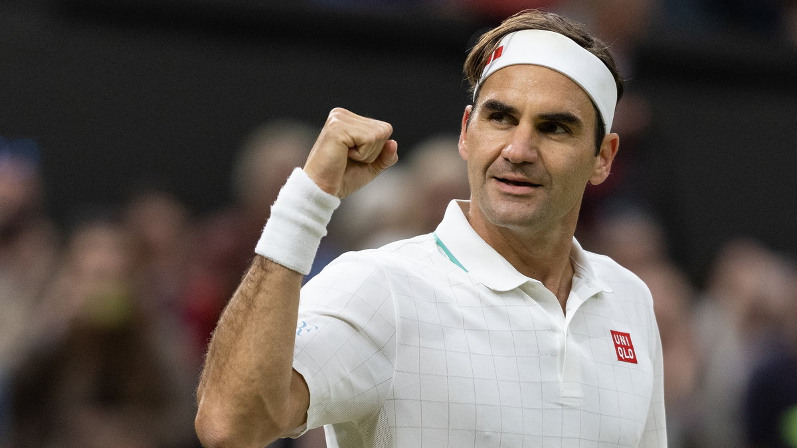

Najnowsze informacje
Tutaj znajdziesz najnowsze wiadomości ze świata tenisa.
Najnowsze Informacje w Świecie Tenisa
Świat tenisa ciągle się rozwija, dostarczając fanom emocjonujących wydarzeń i niezapomnianych momentów. Oto najnowsze wiadomości ze świata tenisa, które przyciągają uwagę kibiców na całym globie.
Nowe Gwiazdy na Horyzoncie
W ostatnich miesiącach uwagę kibiców przyciągnęli młodzi, utalentowani zawodnicy, którzy z impetem wkroczyli na światową scenę. Hiszpański tenisista Carlos Alcaraz, zaledwie 19-letni, zdobył swoje pierwsze tytuły ATP, pokazując niezwykłe umiejętności i dojrzałość na korcie. Jego sukcesy przyciągnęły uwagę mediów i ekspertów, którzy wróżą mu świetlaną przyszłość.
Powrót Rogera Federera
Legenda tenisa, Roger Federer, wraca do rywalizacji po długiej przerwie spowodowanej kontuzją. Szwajcarski mistrz, który zdobył 20 tytułów Grand Slam, ogłosił swój powrót na korty w 2024 roku. Kibice na całym świecie z niecierpliwością czekają na jego występy, mając nadzieję na kolejne wielkie pojedynki z udziałem Federera.
Serena Williams i Jej Plany
Serena Williams, jedna z najbardziej utytułowanych tenisistek w historii, również planuje powrót na korty. Po urodzeniu drugiego dziecka, Williams intensywnie trenuje, aby wrócić do formy i rywalizować na najwyższym poziomie. Jej celem jest zdobycie 24. tytułu Grand Slam, co pozwoliłoby jej wyrównać rekord Margaret Court.
Zmiany w Rankingu ATP i WTA
Ostatnie turnieje przyniosły znaczące zmiany w światowych rankingach. Novak Djoković, dzięki wygranym turniejom, ponownie objął prowadzenie w rankingu ATP, wyprzedzając Daniiła Miedwiediewa. Wśród kobiet, Ashleigh Barty utrzymuje pozycję liderki rankingu WTA, ale młode zawodniczki, takie jak Iga Świątek i Naomi Osaka, depczą jej po piętach.
Innowacje Technologiczne
Technologia nadal odgrywa kluczową rolę w rozwoju tenisa. Wprowadzenie systemu VAR (Video Assistant Referee) do analizy kontrowersyjnych decyzji sędziowskich oraz nowe technologie do śledzenia piłki i analizy gry pomagają zarówno zawodnikom, jak i sędziom. Te innowacje przyczyniają się do zwiększenia przejrzystości i sprawiedliwości na korcie.
Turnieje na Horyzoncie
Nadchodzące turnieje, takie jak Roland Garros, Wimbledon i US Open, przyciągają najlepszych zawodników z całego świata. Organizatorzy zapewniają, że mimo trudności związanych z pandemią COVID-19, turnieje odbędą się zgodnie z planem, z odpowiednimi środkami bezpieczeństwa. Kibice z niecierpliwością czekają na te wydarzenia, licząc na niezapomniane emocje i wspaniałe widowisko.
Świat tenisa nieustannie się zmienia, przynosząc nowe wyzwania i możliwości. Zawodnicy, kibice i organizatorzy turniejów wspólnie tworzą dynamiczną i ekscytującą rzeczywistość, która sprawia, że tenis pozostaje jednym z najważniejszych sportów na świecie.